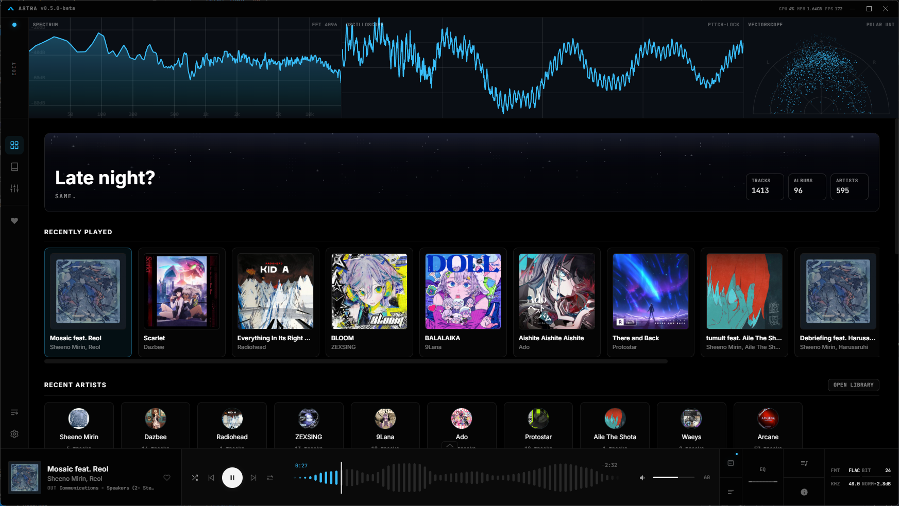
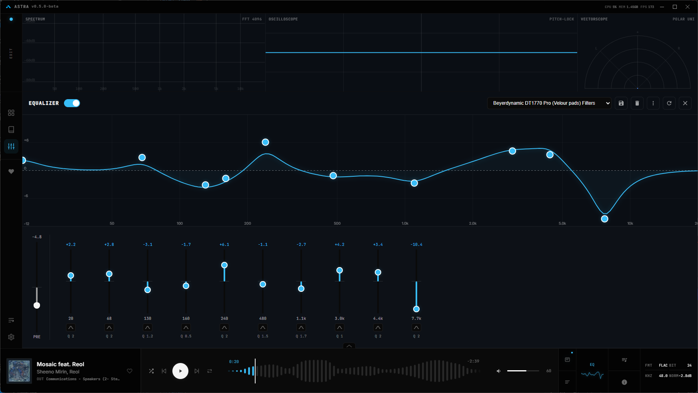
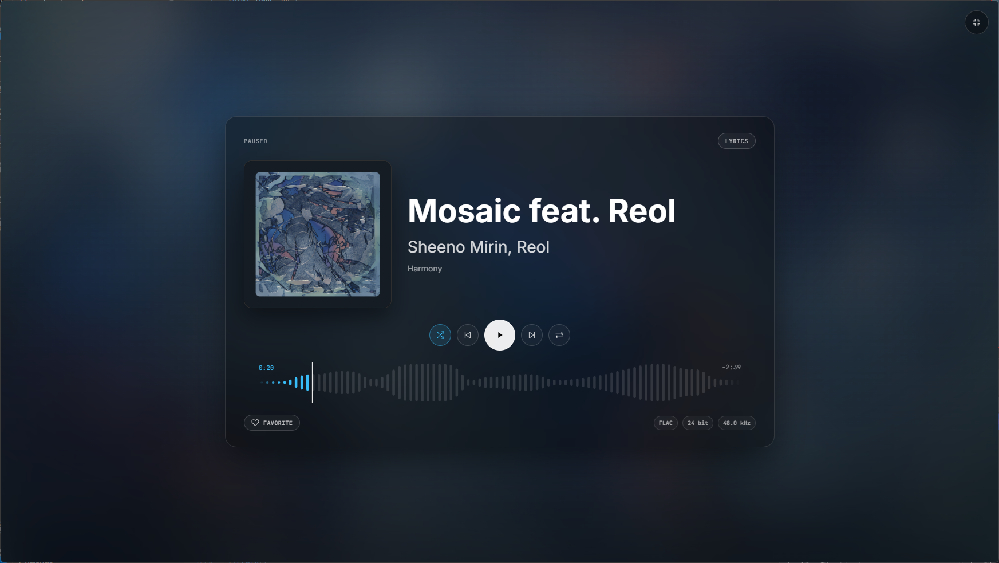
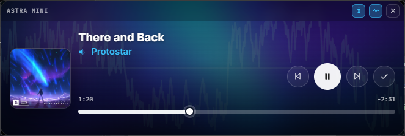

Audiophile desktop music player
A music player for people who still have a music library. Your FLACs, your MP3s, your carefully tagged collection — played back the way it was meant to sound.

Not another wrapper around a web player. Real audio processing for people who care about how their music sounds.
Pre-buffered crossfade-free transitions so albums flow the way they were mastered. No gaps, no glitches, no compromises.
FLAC, MP3, WAV, OGG, AAC, M4A, OPUS, WMA, AIFF — native decoding with an FFmpeg fallback for the rest.
Point it at your folders. Metadata extraction, album artwork, searchable library by artist, album, or track. Favorites and history tracked automatically.
Real-time audio analysis through a native C++ module. The analysis path is tapped independently from your output routing.
Accent colors pulled from album art. Fullscreen mode with ambient spectrum backdrop. A home page sky that changes with the time of day.
Output device selection, loudness normalization, multichannel support with per-channel remapping, and Bluetooth delay calibration.
Real-time visualizers powered by native C++. Seven scopes, fully customizable — drag, resize, and arrange them however you want. The analysis path is independent from output routing, so scopes always reflect the source material.
Pitch-lock detection with waveform display. Stable, coherent trace even at low frequencies.
Configurable FFT with logarithmic frequency scaling and adjustable smoothing.
Stereo phase imaging — visualize the spatial relationship between your left and right channels.
Pick from seven scopes, arrange them in any layout, resize to fit your workflow. The entire scope rack is yours to customize — save presets and switch between setups on the fly.
A fully parametric equalizer with up to 10 bands, a live frequency response graph with spectrum overlay, and built-in presets. If you use AutoEQ, you can import headphone calibration profiles directly.

Album art backdrop with ambient spectrum. Discord Rich Presence if you're into that.


When you just want your music playing without the full window, the mini player keeps controls accessible while staying out of your workspace.
A local REST API for reading playback state, subscribing to real-time updates via SSE, and optionally controlling playback. Loopback only, bearer token auth, disabled by default. You decide what external tools can see and do.
{
"playbackState": "playing",
"currentTime": 42.13,
"duration": 218.56,
"queueLength": 37,
"outputDeviceLabel": "MacBook Pro Speakers",
"visualizerLineColor": "#38bdf8",
"currentTrack": {
"id": "12345",
"title": "Running Up That Hill",
"artist": "Kate Bush",
"album": "Hounds of Love",
"isFavorite": false,
"artworkUrl": "http://127.0.0.1:38401/..."
}
}
| Component | Detail | Engine |
|---|---|---|
| Framework | Electron + Vite | TypeScript |
| Audio Pipeline | Web Audio API + native module | C++ DSP |
| Visualizers | 7 scopes, fully customizable rack layout | C++ Native |
| Formats | FLAC MP3 WAV OGG AAC M4A OPUS AIFF WMA | Native + FFmpeg |
| Equalizer | Parametric, 10-band, AutoEQ import | Web Audio |
| Platforms | Windows, macOS, Linux | Cross-platform |
| License | GNU General Public License v3.0 | Open Source |
Prebuilt binaries for all major platforms. Or build it yourself if that's your thing.
git clone https://github.com/Boof2015/astra.git cd astra npm install npm run dev # development npm run dist # package for current platform